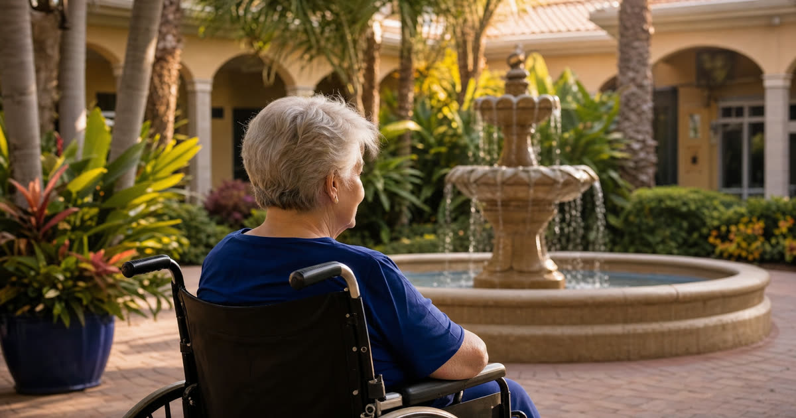

Joan's situation: a Chicago agent, a Tampa nursing home, a mother who needs help now
Joan is 55, lives in Chicago, and holds a power of attorney for her mother Lois, who is 87 and newly admitted to a nursing home in Tampa. (Joan and Lois are a composite example, not actual clients, but their situation is one I see constantly.) Joan's first instinct is to book a flight. Her second, more useful instinct is to ask whether she actually needs to.
The honest answer is: mostly no. Florida Medicaid has built real remote-access tools into its system, and Florida law has made it possible to execute and use a power of attorney without ever setting foot in the state. But "mostly" is doing some work in that sentence, and the exceptions are the parts that trip families up.
Have this exact situation? Talk it through with a Florida attorney — the 20-minute consultation is free.
Book Free Consult or call (888) 388-8445What Joan can genuinely do online
The Florida Medicaid application for long-term care runs through the Department of Children and Families (DCF) and its online portal, commonly called ACCESS Florida. From Chicago, Joan can:
- Create a MyACCESS account and complete the application for Lois online
- Upload supporting documents (bank statements, award letters, proof of Florida residency, the nursing home's level-of-care documentation) directly through the portal
- Complete the required interview by phone rather than in person
- Track the status of the application and respond to requests for additional information as they come in
DCF does not require an in-person visit to a local office to apply for or maintain a long-term care Medicaid case. The interview, which confirms income, assets, and household information, is typically conducted by telephone. For an agent holding a valid power of attorney, there is generally no need to be physically present in Florida to manage this part of the process.
One thing does not change based on where Joan lives: Lois still has to meet Florida's residency requirement, shown through documents like a Florida ID, a lease or facility admission agreement, or similar proof that Florida is her home state now.
Where a Florida signature or a notary still matters
Here is where things get more particular. Some institutions and some document types want a signature that was executed under circumstances they can fully verify, and that is where remote online notarization (RON) becomes useful for an out-of-state agent.
Florida has authorized remote online notarization since 2020 under its notary statutes, and it applies to a wide range of documents, including powers of attorney. In practice, this means Joan could, from Illinois, appear before a Florida-commissioned notary over a secure video call, show valid government-issued identification, and sign a Florida-compliant power of attorney electronically, with witnesses participating remotely as well. The document is then treated as validly executed in Florida.
This matters because of a pattern I see often: a family already has an out-of-state power of attorney, drafted years ago in another state, and assumes it will work the same way in Florida. Legally, Florida generally recognizes a power of attorney that was properly executed under the law of the state where it was signed. But recognition in theory and acceptance in practice are two different things.
The bank relationship, the facility business office, and the authorized representative form
Joan's power of attorney lets her act for Lois generally, but two specific relationships deserve their own attention.
The bank. If Lois's accounts need to be retitled, consolidated, or adjusted as part of spend-down planning, the bank will want to review the power of attorney itself, sometimes requiring its own internal form in addition to the POA. Some banks accept a well-drafted Florida POA (or a properly executed out-of-state one) without friction. Others, particularly for larger institutions with rigid compliance departments, slow things down regardless of the document's validity. Calling ahead, before the Medicaid clock is already running, saves real time.
The nursing home business office. The facility in Tampa will want its own point of contact for billing, care planning updates, and eventual private-pay-to-Medicaid transition paperwork. Joan does not need to be physically in Tampa to be that contact, but she does need the facility to have her POA on file and understand that she is the one authorized to make financial decisions. A short, cooperative relationship with the business office, built early, tends to prevent confusion later about who can sign what.
DCF's authorized or designated representative. Separate from the power of attorney itself, DCF allows an applicant (or their legal representative) to name someone as an authorized representative on the Medicaid case specifically, which gives that person standing to communicate with the caseworker, submit documents, and respond to requests. For an agent like Joan who already holds a valid power of attorney, this is usually a straightforward administrative step rather than a separate legal hurdle, but it is worth confirming is properly on file early in the application so that DCF will speak with Joan directly rather than insisting on going through Lois.
What still calls for a Florida attorney, and what actually requires travel
Even with a cooperative bank and a smooth ACCESS application, some tasks benefit from a Florida attorney's hands-on involvement rather than a long-distance effort:
- Preparing or revising the power of attorney itself so it meets Florida's specific statutory requirements, including the enhanced-authority language some institutions expect to see
- Handling a deed if Lois's Florida homestead needs to be addressed as part of the planning, since real estate transfers carry their own execution and recording formalities
- Reviewing Medicaid denial or appeal issues through the Office of Appeal Hearings, where the stakes and the paperwork both tend to be higher
- Coordinating with the Agency for Health Care Administration or the CARES unit at the Department of Elder Affairs if there is a dispute about Lois's level of care or medical eligibility
As for travel, the honest truth is that most families do not need a plane ticket to run the Medicaid application. What they sometimes need is one trip, timed deliberately, for a task that genuinely benefits from being in the room: a care-planning meeting at a turning point, a signature that a particular bank insists be done in branch, or simply a visit to Lois herself. A good Florida elder law attorney can usually tell a family early on which category their situation falls into, which saves a lot of unnecessary back-and-forth flights.
Frequently Asked Questions
The Truestead Takeaway
Joan's situation is common, and the tools exist to handle almost all of it from Chicago: the ACCESS Florida portal for the application itself, phone interviews with DCF, document uploads, and remote online notarization for a properly drafted Florida power of attorney. What trips families up is usually not distance, it is an outdated or out-of-state POA that a Florida bank hesitates to honor, or a DCF authorized representative designation that never got filed. Before assuming a flight is necessary, a family in Joan's position should have a Florida elder law attorney review the existing power of attorney and confirm exactly which pieces, if any, truly need a Florida-based signature.
Have a child turning 18? Get the free 18 & Protected packet — the legal documents every Florida 18-year-old needs.
Get the Free PacketTalk to a Florida Attorney
Every family’s situation is different. Schedule a consultation with Arthur Simpson, Esq. to review your plan and your options under Florida law.
Schedule a Consultation →This article is for general informational purposes only and does not constitute legal advice, nor does reading it create an attorney-client relationship. Florida estate, elder, probate, and real estate law are fact-specific and change over time. Consult a licensed Florida attorney about your individual circumstances. Arthur Simpson, Esq. is licensed to practice law in the State of Florida. Attorney advertising.
Talk to a Florida Attorney — Free 20-Minute Consultation
Pick a time below. No obligation, no pressure — just answers.